Tata cara berlalu lintas bagi Sepeda motor
Brada di jalur kiri
Gunakan selalu jalur kiri dan hati-hati dengan kemunculan kendaraan yang datang mendadak dari arah yang berlawanan. Jangan berkendara sepanjang sisi kanan jalan walaupun tidak ada kendaraan lain dari arah yang berlawanan. (berkendara di sebelah kanan jalan akan menyebabkan tabrakan yang dapat mengakibatkan luka yang serius atau kematian).
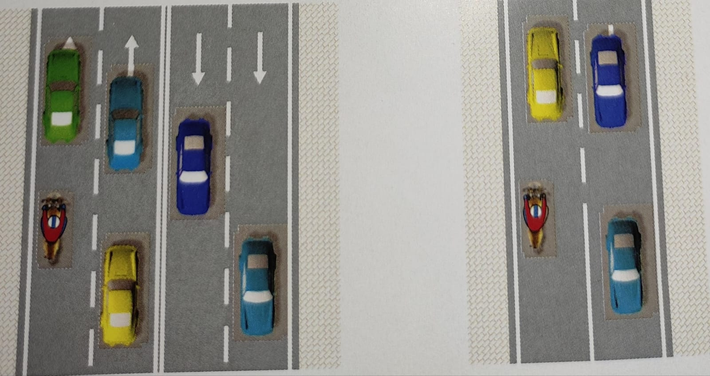Berpindah jalur
Ketika hendak berpindah jalur, sangat penting untuk memberi tanda ke arah yang dituju bagi pengendara lain dengan menyalakan lampu sein, kira-kira 3 detik kemudian baru berpindah jalur. Pengendara harus memperhatikan kaca spion, terutama memeriksa kendaraan di belakangnya sebelum berpindah jalur. Waktu 3 detik dimaksudkan agar pengendara lain menyadari dan mampu bereaksi terhadap apa yang akan dilakukan oleh pengendara yang akan berpindah jalur.

Perhatikan pejalan kaki dan hewan
Ketika berkendara di jalan, pengendara motor harus selalu hati-hati tidak hanya pada pengendara yang lain di sekitarnya, tetapi juga perilaku dari pejalan kaki dan hewan.

Patuhi Rambu-rambu Lalu Lintas
Rambu-rambu lalu lintas dibuat untuk memberikan panduan keselamatan bagi pengguna jalan dan jangan lupa untuk selalu membawa SIM dan STNK demi kenyamanan dalam berkendara.

Rintangan di jalan berbatu, kerikil, tanah atau lumpur dan pasir
Batu, kerikil, tanah atau lumpur dan pasir membuat permukaan jalan sangat licin dan dapat menyebabkan sepeda motor tergelincir dan jatuh. Untuk menghindarinya, kurangi kecepatan sebelumnya (pada permukaan jalan yang baik), hindari belok terlalu patah dan pengereman terlalu keras saat melalui kondisi jalan seperti ini.

Melewati Persimpangan
Ketika belok ke kiri atau ke kanan dipersimpangan sangat penting untuk menyalakan lampu sein 30 meter sebelum mendekati persimpangan untuk memberikan tanda arah yang hendak dituju kepada pengguna jalan yang lain. Sebelum berpindah jalur, pastikan kondisi keamanan dan keadaan lalu lintas di sekitarmu (jangan hanya melihat kaca spion, karena kaca spion memiliki keterbatasan pandangan).
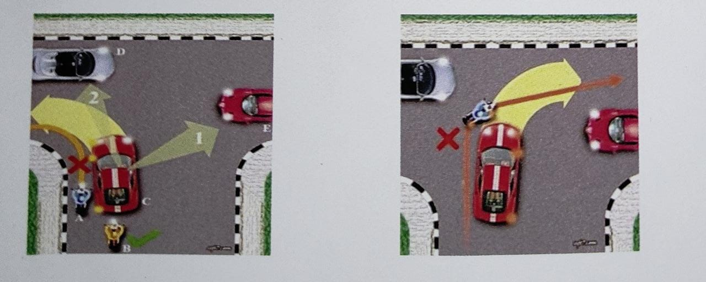Hal hal yang tidak boleh dilakukan bagi pengendara Sepeda motor


Hal hal yang tidak boleh dilakukan bagi pengendara mobil
mengetik pesan singkat
Hal ini sangat berbahaya, selain memikirkan apa yang hendak ditulis, mata dan tangan terfokus untuk mengetik di papan ketik (key pad). Kondisi tersebut sangat menyita perhatian. Kalau memang kondisinya darurat, sebaiknya menepi dahulu.

Menelpon
Selain mengurangi konsentrasi mengemudi, menelepon akan sangat berbahaya berkaitan dengan isi pembicaraan yang bisa menyebabkan kondisi emosi yang berubah yang mempengaruhi konsentrasi pengemudi, seperti marah, kaget, sedih. dsb. Kalau memang kondisinya darurat, sebaiknya menepi dahu
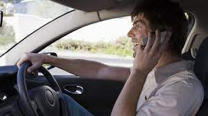Makan, minum dan merokok
Hal ini merepotkan karena harus mengatur tangan untuk bisa memegang makanan/ minuman sambil memegang setir. Ketika minuman/ makanan yang dipegang memiliki suhu yang cukup panas tumpah akan menimbulkan kepanikan. Bagi perokok, kepanikan timbul ketika percikan bara rokok jatuh di tempat yang tidak diinginkan atau terkena badan.

Berinteraksi dengan Sistem Audio/Video
Menyetel audio seperti volume dan frekuensi radio, mengganti CD dan mengoneksi USB atau iPod memerlukan perhatian lebih. Meski tidak terlalu repot, tetapi hal tersebut mampu mengalihkan perhatian. Ada baiknya melakukan interaksi tersebut saat berhenti atau minta tolong penumpang sebelah untuk mengaktifkan
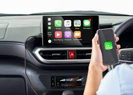Bercanda dengan Penumpang
Harus dihindari berbincang-bincang masalah yang cukup pelik atau bercanda menggunakan anggota badan Hal tersebut mengurangi kewaspadaan sehingga tidak mampu mengantisipasi gangguan dari luar yang bersifat dadakan. Secara psikologis, ini penyebab yang mampu mengurangi konsentrasi saat mengemudi
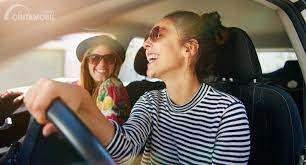Mengantuk
Kurang tidur merupakan penyebab utama mengantuk. Penyebab yang lain adalah kebanyakan makan setelah kerja keras atau berpikir berat. Sementara secara alami manusia akan merasa lelah pada pukul 6 sore, mengantuk jam 9 malam dan batas maksimum bisa bertahan hingga pukul 2 dini hari
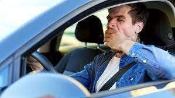Banyak pikiran
Faktor ini bisa membuat pengendara melamun dan memikirkan hal lain yang menjadi beban pikirannya. Lebih baik tidak menyetir karena sama bahayanya dengan mengantuk yang bisa mengurangi tingkat kewaspadaan.

Mengkonsumsi minuman beralkohol dan obat
terlarang Jelas, ini sangat dilarang. Sehebat apapun kita dalam berkendara, ketika di bawah pengaruh obat-obatan dan minuman beralkohol, semua itu tidak ada artinya karena kita akan lepas kendali.

Muatan berlebih
Muatan melebihi kapasitas angkut kendaraan sangatlah berbahaya hal ini akan membuat semua komponen pada kendaraan menjadi tidak stabil. Dalam penggunaan rem akan membuat jarak pengereman menjadi lebih panjang dan tidak stabil.

Berhias/berdandan
Hal ini sangat berbahaya karena selain merepotkan ketika memegang kendali kendaraan hal ini juga akan sangat mengurangi konsentrasi saat mengemudi.
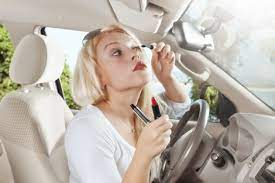Keselamatan Penumpang
Penumpang Sepeda Motor:
Untuk meningkatkan keselamatan penumpang dalam sepeda motor, ada beberapa hal yang perlu diperhatikan:
- Kenakan helm yang sesuai dan pas dengan baik
- Naik dengan pengendara yang berpengalaman dan mematuhi peraturan lalu lintas.
- Hindari cara membonceng dengan posisi kaki menyamping (biasanya wanita)
- Tidak berboncengan lebih dari satu orang 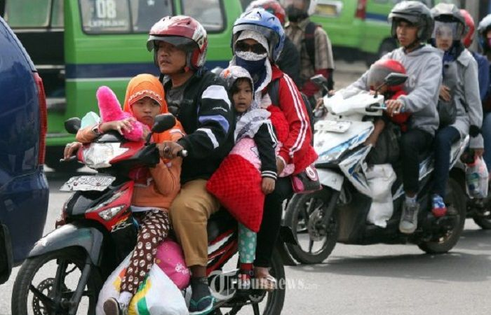
- Tidak melakukan gerakan tiba-tiba yang dapat mempengaruhi kestabilan pengendara 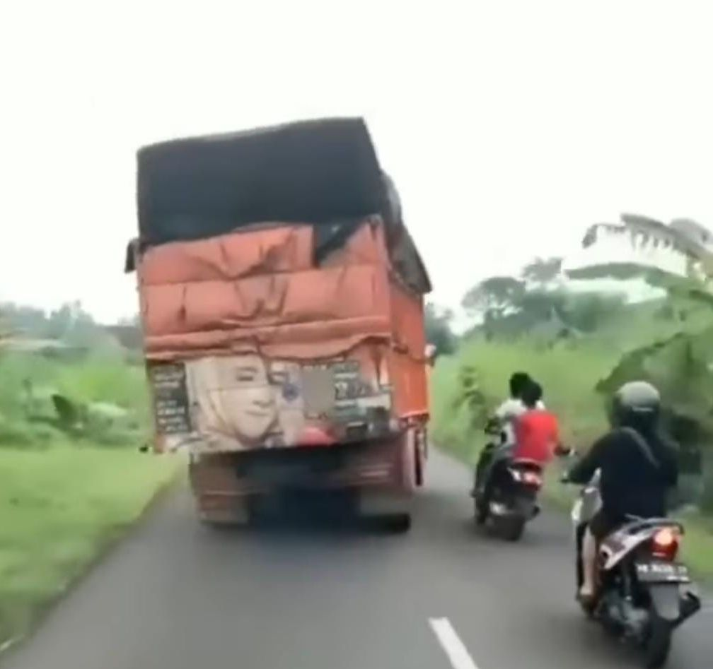
- Memegang pinggang pengendara demi. menjaga keseimbangan dan mengikuti arah badan pengendara, hindari melawan arah. karena kestabilan akan terganggu. 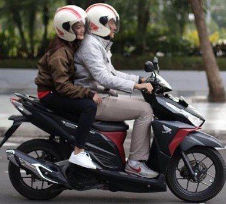
- Gunakan jaket, sarung tangan, sepatu yang sesuai, dan celana panjang untuk melindungi tubuh dari benturan dan luka.
- Pastikan kaki pembonceng sudah mampu mencapai pijakan kaki atau fool step 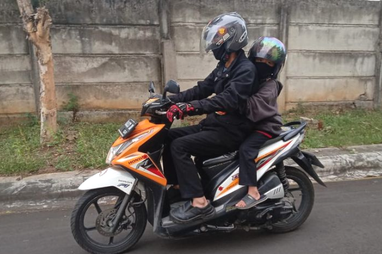


Penumpang Kendaraan Pribadi:
Agar penumpang kendaraan pribadi tetap aman, perhatikan hal berikut:
- Pastikan anak-anak diikat dengan kursi pengaman yang sesuai dengan usia mereka. 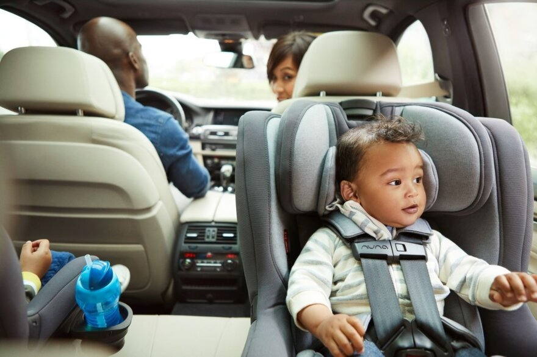
- Naik/turun kendaraan dari sisi kiri kendaraan.
- Gunakan sabuk pengaman
- Tidak mengeluarkan badan ke luar jendela.
- Dilarang duduk di bak terbuka pick up.
- Tidak berdesak bila penuh. 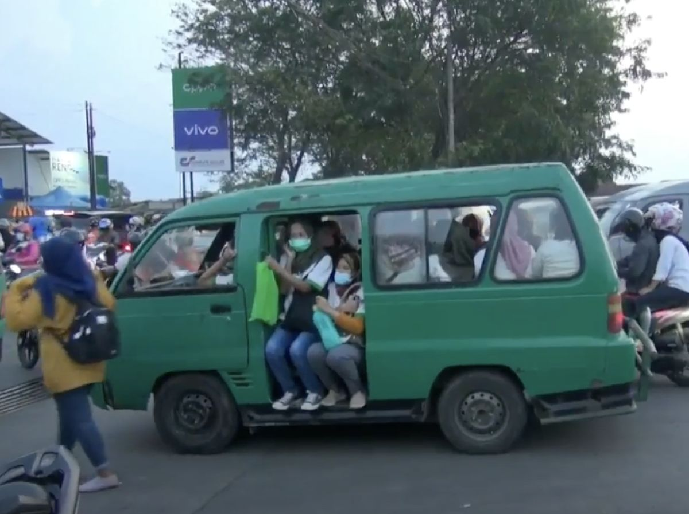
- Tidak menganggu pengemudi
- Penumpang anak-anak yang berusia kurang dari 12 tahun duduk khusus anak
- Penumpang anak-anak yang berusia kurang dari 12 tahun duduk di belakang agar tidak mengalami luka ketika terjadi kecelakaan
- Duduk dengan aman dan ikuti petunjuk pengemudi atau petugas yang ada.
- Gunakan pegangan dan penyangga yang disediakan untuk menjaga keseimbangan
- Patuhi peraturan dan kebijakan keselamatan yang berlaku di kendaraan umum
- Saat naik angkot gunakan kaki kanan, ketika turun gunakan kaki kiri


Penumpang Kendaraan Umum:
Ketika menjadi penumpang di kendaraan umum, lakukan hal berikut untuk keselamatan Anda: